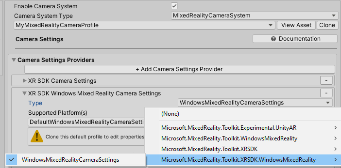

开始使用 MRTK 和 XR SDK
XR SDK是Unity的新的XR管线在Unity 2019.3及以后。在Unity 201年，它提供了现有XR管线的另一种选择。在Unity 2020年，它将成为Unity中唯一的XR管线。
先决条件
要开始使用混合现实工具包，请遵循提供的步骤将MRTK添加到项目中。
在Unity项目中添加XR SDK
对于MRTK 2.3, XR SDK支持Windows混合现实。
Unity中所需
- 进入Unity的包管理器并安装Windows XR插件包，它在XR SDK上增加了对Windows混合现实的支持。这也会下拉一些依赖包。确保以下全部安装成功:
- XR Plugin Management
- Windows XR Plugin
- XR Legacy Input Helpers
- 点击 Edit > Project Settings.
- 单击 Project Settings窗口中的XR Plug-in Management选项卡。
- 转到 Universal Windows Platform settings，确保在Plug-in Providers下检查Windows混合现实。
- 确保检查了启动时的 Initialize XR。
- (可选的) 单击 XR Plug-in Management下的Windows Mixed Reality选项卡，创建一个自定义设置配置文件来更改默认值。如果设置列表已经存在，则不需要创建配置文件。

MRTK中所需
选择"DefaultXRSDKConfigurationProfile" 作为激活的配置文件，或者克隆它进行定制。在需要的时候，使用MRTK的XR SDK系统和providers设置这个配置文件。
要将现有的配置文件迁移到XR SDK，需要更新以下服务和data providers :
相机
从WindowsMixedReality.WindowsMixedRealityCameraSettings
到 XRSDK.WindowsMixedReality.WindowsMixedRealityCameraSettings 和 GenericXRSDKCameraSettings

输入
从 WindowsMixedReality.Input.WindowsMixedRealityDeviceManager

到 XRSDK.WindowsMixedReality.WindowsMixedRealityDeviceManager

Boundary 边界

Spatial awareness 空间感知
从 WindowsMixedReality.SpatialAwareness.WindowsMixedRealitySpatialMeshObserver

到 XRSDK.WindowsMixedReality.WindowsMixedRealitySpatialMeshObserver

Controller mappings 控制器映射
如果使用自定义控制器映射配置文件，打开其中一个，并运行Mixed Reality Toolkit -> Utilities -> Update -> Controller Mapping Profiles菜单项，以确保定义了新的XR SDK控制器类型。